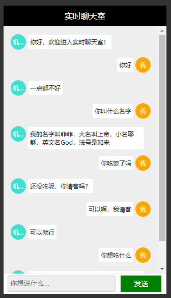
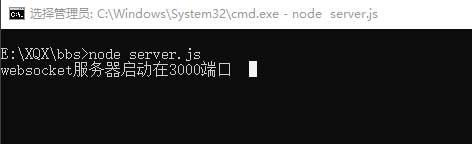

koa、koa-route、koa-websocket、request。
html、css、js、websocket。
http://api.qingyunke.com/api.php?key=free&appid=0&msg=msg。

1.在桌面创建bbs文件夹，然后在文件夹内打开cmd,输入：
$ npm init
初始化箱项目，生成package.json包管理文件
2.cmd输入：
$ npm install koa --save
安装koa。
3.cmd输入：
$ npm install koa-route --save安装koa路由模块。
4.cmd输入：
$ npm install koa-websocket --save安装koawebsocket模块。
我的package.json：
{
"name": "bbs",
"version": "1.0.0",
"description": "",
"main": "server.js",
"scripts": {
"test": "echo \"Error: no test specified\" && exit 1",
"start": "node server.js"
},
"author": "",
"license": "ISC",
"dependencies": {
"koa": "^2.8.1",
"koa-route": "^3.2.0",
"koa-websocket": "^6.0.0"
}
}
5.在bbs文件夹中新建server.js,项目启动入口文件。
添加内容如下：
const Koa = require('koa'),
route = require('koa-route'),
websockify = require('koa-websocket'),
http = require('http'),
app = websockify(new Koa());
app.ws.use(route.all('/', ctx => {
// websocket作为“ctx.websocket”添加到上下文中。
ctx.websocket.on('message', message => {
startRequest(message, ctx);
});
}));
function startRequest(message, ctx) {
// 采用http模块向服务器发起一次get请求
http.get(`http://api.qingyunke.com/api.php?key=free&appid=0&msg=${encodeURI(message)}`, res => {
// 防止中文乱码
res.setEncoding('utf-8');
// 监听data事件，每次取一块数据
res.on('data', chunk => {
ctx.websocket.send(JSON.parse(chunk).content);
});
}).on('error', err => {
ctx.websocket.send('对不起，网络故障了');
});}
// 监听端口、启动程序
app.listen(3000, err => {
if (err) throw err;
console.log('websocket服务器启动在3000端口');
})
假如对server.js还不清楚的，可以留言或者邮件咨询我。
6.在bbs文件夹中新建index.html文件，作为客户端展示文件。
添加内容如下：
<!DOCTYPE html>
<html lang="en">
<head>
<meta charset="UTF-8">
<title>实时聊天室</title>
<link rel="stylesheet" type="text/css" href="index.css">
</head>
<body>
<div class="box">
<div class="title">实时聊天室</div>
<div class="input-box">
<input class="input" placeholder="你想说什么..." type="text" id="pl" onkeydown="keyEnter()" />
<div class="send" id="submit">发送</div>
</div>
<div class="view" id="ulView">
<ul id="view"></ul>
</div>
</div>
<script src="index.js"></script>
</body>
</html>
7.在bbs文件夹中新建index.css,客户端的样式。
内容如下：
* {
padding: 0;
margin: 0;
-webkit-user-select: none;
-moz-user-select: none;
}
html,
body {
height: 100%;
width: 100%;
background-color: #333;
position: relative;
font-size: 12px;
}
.box {
position: absolute;
top: 50%;
left: 50%;
transform: translate(-50%, -50%);
background-color: #eee;
width: 320px;
height: 564px;
box-sizing: border-box;
}
.title {
height: 40px;
line-height: 40px;
text-align: center;
background-color: #000;
color: #fff;
position: relative;
font-size: 16px;
}
.input-box {
margin-top: 10px;
position: absolute;
bottom: 0;
background-color: #fff;
width: 100%;
height: 40px;
line-height: 32px;
padding: 4px;
padding-right: 0;
box-sizing: border-box;
display: -webkit-flex;
display: -moz-flex;
display: -ms-flex;
display: -o-flex;
display: flex;
-ms-align-items: center;
align-items: center;
justify-content: space-between;
border-top: 1px solid #eee;
}
.input {
vertical-align: top;
height: 32px;
line-height: 32px;
outline: none;
border: 1px solid #ccc;
padding: 0 4px;
box-sizing: border-box;
flex: 1;
background-color: #eee;
border-radius: 4px;
margin-right: 10px;
margin-left: 4px;
}
.input:focus {
border: 1px solid #ccc;
}
.send {
width: 80px;
text-align: center;
height: 32px;
line-height: 32px;
cursor: pointer;
background-color: green;
color: #fff;
margin-right: 10px;
font-size: 14px;
}
.send:active {
opacity: 0.6;
}
li {
list-style: none;
padding: 6px 10px;
box-sizing: border-box;
}
.my-say {
text-align: right;
}
.say {
display: inline-block;
background-color: #fff;
font-size: 12px;
padding: 6px 4px;
border-radius: 4px;
margin-top: 1px;
vertical-align: top;
max-width: 220px;
}
.computer-say .sayman {
background-color: #40E0D0;
}
.my-say .sayman {
background-color: #FFA500;
}
.my-say .say {
text-align: left;
}
.sayman {
font-size: 10px;
display: inline-block;
height: 30px;
width: 30px;
background-color: #ccc;
border-radius: 50%;
text-align: center;
line-height: 30px;
overflow: hidden;
text-overflow: ellipsis;
white-space: nowrap;
padding: 0 4px;
box-sizing: border-box;
margin: 0 4px;
color: #fff;
}
.view {
position: absolute;
top: 40px;
bottom: 40px;
left: 0;
width: 100%;
padding: 10px 0;
box-sizing: border-box;
overflow-y: auto;
}
8.在bbs文件夹中创建index.js文件，作为客户端js处理文件。
内容如下：
let submit = document.getElementById("submit"),
pl = document.getElementById("pl");
// 很重要 必须写，判断浏览器是否支持websocket
let CreateWebSocket = (() => {
return (urlValue) => {
if (window.WebSocket) return new WebSocket(urlValue);
if (window.MozWebSocket) return new MozWebSocket(urlValue);
return false;
}
})()
// 实例化websoscket websocket有两种协议ws(不加密)和wss(加密)
let webSocket = CreateWebSocket(`ws://127.0.0.1:3000`);
webSocket.onopen = evt => {
addMsg(1, '你好，欢迎进入实时聊天室！')
}
webSocket.onmessage = evt => {
// 这是服务端返回的数据
addMsg(1, evt.data);
submit.innerHTML = '发送';
}
// input事件发送数据
submit.onclick = (e) => {
if (e.target.innerHTML == '回复中...') {
return false
}
e.target.innerHTML = '回复中...';
const str = document.getElementById("pl").value;
webSocket.send(str);
addMsg(2, str);
}
// 绑定回车事件
function keyEnter() {
if (event.keyCode == 13) {
document.getElementById("submit").click();
}
}
// 添加消息
function addMsg(type, msg) {
let li = document.createElement('li');
// 1机器人/2自己
if (type == 1) {
li.classList.add('computer-say');
li.innerHTML = `<span class="sayman">机器人</span><span class="computer say">${msg}</span>`;
} else {
li.classList.add('my-say');
li.innerHTML = `<span class="computer say">${msg}</span><span class="sayman">我</span>`;
pl.value = '';
}
document.getElementById('view').appendChild(li);
document.getElementById('ulView').scrollTo(0, document.getElementById('view').clientHeight);
}
为了保证服务端包都可以加载进来，可以在bbs文件夹中打开cmd，然后输入：
$ npm install
到这里，程序就已经搭建完成了。
启动程序：
cmd输入：
$ node server.js
这样服务端就已经启动成功了。
直接右键浏览器打开index.html即可愉快地和机器人妹妹聊天了，告别单身狗了....
喜欢的麻烦点赞，谢谢
可以关注下本人博客，本人会坚持时不时更新好的博客给大家哦。